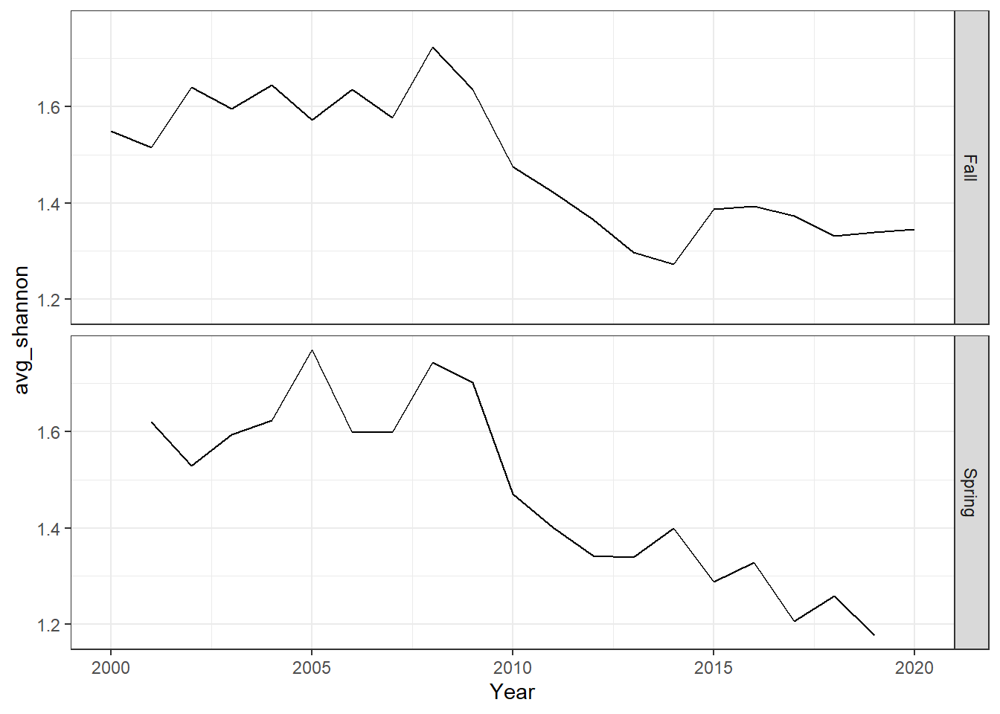
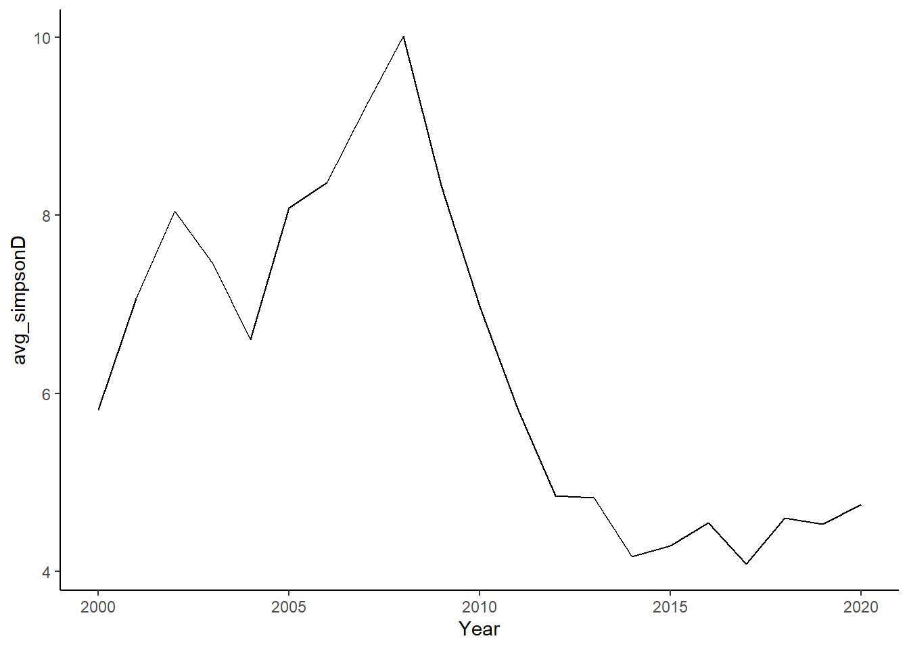
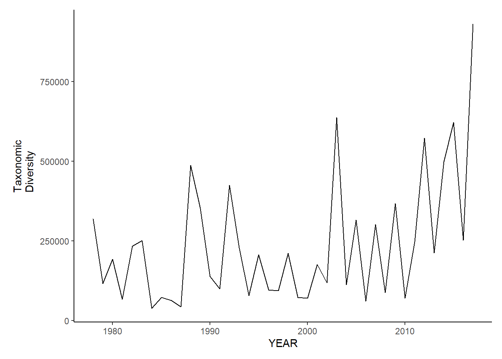

ME-NH trawl diveristy metrics
By season and total
library(here)
library(ggplot2)
library(dplyr)
setwd("C:/Users/jjesse/Desktop/GMRI/ME-NH-Trawl-Seagrant/Data")
new_data<-read.csv("MaineDMR_Trawl_Survey_Catch_Data_2021-05-14.csv")
#remove unnecessary species by getting scientific name from old data
setwd("C:/Users/jjesse/Box/Kerr Lab/Fisheries Science Lab/ME NH Trawl- Seagrant/Seagrant-AEW/ME NH data for GMRI")
trawl <- read.csv("EXPCATCH_forGMRI.csv", header = TRUE)%>%
select(COMMON_NAME, SCIENTIFIC_NAME)%>%
distinct()
trawl_2<- left_join(trawl,new_data)
# first drop samples that are not to the species level
trawl_2 <- trawl_2[!trawl_2$SCIENTIFIC_NAME == "Anemonia" ,]
trawl_2 <- trawl_2[!trawl_2$SCIENTIFIC_NAME == "Pandalus" ,] #ID to spp also
trawl_2 <- trawl_2[!trawl_2$SCIENTIFIC_NAME == "Stelleroidea",]
trawl_2 <- trawl_2[!trawl_2$SCIENTIFIC_NAME == "Octopoda",]
trawl_2 <- trawl_2[!trawl_2$SCIENTIFIC_NAME == "Clypeasteroida",]
trawl_2 <- trawl_2[!trawl_2$SCIENTIFIC_NAME == "Yoldia",]
trawl_2 <- trawl_2[!trawl_2$SCIENTIFIC_NAME == "Calcarea",]
trawl_2 <- trawl_2[!trawl_2$SCIENTIFIC_NAME == "Majidae",]
trawl_2 <- trawl_2[!trawl_2$SCIENTIFIC_NAME == "Balanus",]
trawl_2 <- trawl_2[!trawl_2$SCIENTIFIC_NAME == "Stomatopoda",] #low
trawl_2 <- trawl_2[!trawl_2$SCIENTIFIC_NAME == "Euphausiacea",]
trawl_2 <- trawl_2[!trawl_2$SCIENTIFIC_NAME == "Paguroidea",]
trawl_2 <- trawl_2[!trawl_2$SCIENTIFIC_NAME == "",]
trawl_2 <- trawl_2[!trawl_2$SCIENTIFIC_NAME == "Mysidacea",]
trawl_2 <- trawl_2[!trawl_2$SCIENTIFIC_NAME == "Diaphus",] #low
trawl_2 <- trawl_2[!trawl_2$SCIENTIFIC_NAME == "Sepiolidae",]
trawl_2 <- trawl_2[!trawl_2$SCIENTIFIC_NAME == "Artediellus",] #low
trawl_2 <- trawl_2[!trawl_2$SCIENTIFIC_NAME == "Macrouridae",] #low
trawl_2 <- trawl_2[!trawl_2$SCIENTIFIC_NAME == "Paralepididae",] #low
trawl_2 <- trawl_2[!trawl_2$SCIENTIFIC_NAME == "Clupeidae",] #low
trawl_2 <- trawl_2[!trawl_2$SCIENTIFIC_NAME == "Myctophidae",] #low
## there are 1121 occurrences where catch = NA; remove these?
trawl_2 <- trawl_2[!is.na(trawl_2$Expanded_Catch),]
## for some reason there 26 are observations of catch = 0; remove these
trawl_2 <- trawl_2[!trawl_2$Expanded_Catch == 0,]
## there are 16 occurrences where weight = NA; remove these?
trawl_2 <- trawl_2[!is.na(trawl_2$Expanded_Weight_kg),]
## for some reason there 0 are observations of weight = 0; remove these
trawl_2 <- trawl_2[!trawl_2$Expanded_Catch == 0,]
data<-trawl_2Species richness
me_richness<-group_by(data, Year,Season, Tow_Number)%>%
summarise(richness=length(unique(COMMON_NAME)))%>%
group_by(Year, Season)%>%
summarise(avg_richness=mean(richness))
ggplot()+ geom_line(data=me_richness, aes(Year, avg_richness))+facet_grid(rows = vars(Season))+theme_bw()
richness<-group_by(data, Year, Season, Tow_Number)%>%
summarise(richness=length(unique(COMMON_NAME)))%>%
group_by(Year)%>%
summarise(avg_richness=mean(richness))
rich<-ggplot()+ geom_line(data=subset(richness,Year>2005 & Year<2020), aes(Year, avg_richness))+ theme_classic()+ ylab(expression(paste("Species\nRichness")))+theme(plot.margin = margin(10, 10, 10, 20))
rich
Shannon-Weiner diversity
me_shannon<-group_by(data, Year,Season, Tow_Number, COMMON_NAME)%>%
mutate(species_total=sum(Expanded_Weight_kg, na.rm=TRUE))%>%
group_by(Year, Season, Tow_Number)%>%
mutate(total=sum(species_total), prop=(species_total/total))%>%
summarise(shannon=-1*(sum(prop*log(prop),na.rm=TRUE)))%>%
group_by(Year, Season)%>%
summarise(avg_shannon=mean(shannon))
ggplot()+geom_line(data=me_shannon, aes(Year, avg_shannon))+
facet_grid(rows=vars(Season))+theme_bw()
shannon<-group_by(data, Year,Tow_Number,COMMON_NAME)%>%
mutate(species_total=sum(Expanded_Weight_kg, na.rm=TRUE))%>%
group_by(Year, Tow_Number)%>%
mutate(total=sum(species_total),prop=(species_total/total))%>%
summarise(shannon=-1*(sum(prop*log(prop),na.rm=TRUE)))%>%
group_by(Year)%>%
summarise(avg_shannon=mean(shannon))
diversity<-ggplot()+geom_line(data=subset(shannon,Year>2005 & Year <2020), aes(Year, avg_shannon))+theme_classic()+ ylab(expression(paste("Shannon-Weiner\nDiversity")))+theme(plot.margin = margin(10, 10, 10, 20))
diversity
Simpson’s diversity and evenness
me_simpson<- group_by(data, Year, COMMON_NAME, Season, Tow_Number)%>%
mutate(species_total=sum(Expanded_Weight_kg, na.rm=TRUE))%>%
group_by(Year, Season, Tow_Number)%>%
mutate(richness=length(unique(COMMON_NAME)))%>%
mutate(total=sum(species_total))%>%
mutate(prop=(species_total/total))%>%
summarise(simpsonD=1/(sum(prop^2)), simpsonE=simpsonD*(1/richness))%>%
group_by(Year, Season)%>%
summarise(avg_simpsonD=mean(simpsonD), avg_simpsonE=mean(simpsonE))
# this code is not working properly, very high simpson's d and e??
ggplot()+geom_line(data=me_simpson, aes(Year, avg_simpsonE))+
facet_grid(rows=vars(Season))+theme_bw()
simpson<-group_by(data, Year,COMMON_NAME)%>%
summarise(species_total=sum(Expanded_Weight_kg, na.rm=TRUE))%>% #aggregate to get yearly species totals
group_by(Year)%>%
mutate(richness=length(unique(COMMON_NAME)))%>%
mutate(total=sum(species_total))%>%
mutate(prop=(species_total/total))%>%
summarise(simpsonD=1/(sum(prop^2)), simpsonE=simpsonD*(1/richness))%>%
group_by(Year)%>%
summarise(avg_simpsonD=mean(simpsonD), avg_simpsonE=mean(simpsonE))
ggplot()+geom_line(data=simpson, aes(Year, avg_simpsonD))+theme_classic()
evenness<-ggplot()+geom_line(data=subset(simpson,Year>2005 & Year <2020), aes(Year, avg_simpsonE))+theme_classic()+ ylab(expression(paste("Simpson's\nEvenness")))+theme(plot.margin = margin(10, 10, 10, 20))
evenness
Average taxinomic distinctness
library(taxize)
library(purrr)
library(mgcv)
# data2<-read.csv(here("Data/common_scientific_convert.csv"))%>%
# distinct(COMMON_NAME, .keep_all=TRUE)
#
# data2<-left_join(data,data2, by="COMMON_NAME")
species <- filter(data,!is.na(SCIENTIFIC_NAME))%>%
rename(Species=SCIENTIFIC_NAME)
#add scientific name for taxonomic distinctness
#na<-filter(data, is.na(SCIENTIFIC_NAME))%>%
# distinct(COMMON_NAME)
diff_species<-as.vector(unique(species$Species))
tax <- classification(diff_species, db = 'itis') ## == 142 queries =============
## v Found: Alosa pseudoharengus
## v Found: Squalus acanthias
## v Found: Glyptocephalus cynoglossus
## v Found: Paralichthys oblongus
## v Found: Pseudopleuronectes americanus
## v Found: Limanda ferruginea
## v Found: Melanogrammus aeglefinus
## v Found: Urophycis chuss
## v Found: Merluccius bilinearis
## v Found: Urophycis tenuis
## v Found: Homarus americanus
## v Found: Lophius americanus
## v Found: Hippoglossoides platessoides
## v Found: Pollachius virens
## v Found: Zoarces americanus
## v Found: Myoxocephalus octodecemspinosus
## v Found: Centropristis striata
## v Found: Leucoraja erinacea
## v Found: Leucoraja ocellata
## v Found: Loligo pealeii
## v Found: Gadus morhua
## v Found: Cancer irroratus
## v Found: Enchelyopus cimbrius
## v Found: Placopecten magellanicus
## v Found: Prionotus carolinus
## v Found: Aspidophoroides monopterygius
## v Found: Cancer borealis
## v Found: Trachurus lathami
## v Found: Hemitripterus americanus
## v Found: Illex illecebrosus
## v Found: Peprilus triacanthus
## v Found: Tautogolabrus adspersus
## v Found: Clupea harengus
## v Found: Stenotomus chrysops
## v Found: Amblyraja radiata
## v Found: Sebastes fasciatus
## v Found: Scomber scombrus
## v Found: Pandalus borealis
## v Found: Alosa sapidissima
## v Found: Dichelopandalus leptocerus
## v Found: Brevoortia tyrannus
## v Found: Osmerus mordax
## v Found: Cryptacanthodes maculatus
## v Found: Menidia menidia
## v Found: Ammodytes americanus
## v Found: Acipenser oxyrinchus
## v Found: Cyclopterus lumpus
## v Found: Pandalus montagui
## v Found: Arctica islandica
## v Found: Caudina arenata
## v Found: Crangon septemspinosa
## v Found: Engraulis eurystole
## v Found: Chionoecetes opilio
## v Found: Cucumaria frondosa
## v Found: Urophycis regia
## v Found: Myoxocephalus scorpius
## v Found: Astarte undata
## v Found: Hyas araneus
## v Found: Lebbeus groenlandicus
## v Found: Triglops murrayi
## v Found: Citharichthys arctifrons
## v Found: Malacoraja senta
## v Found: Pitar morrhuanus
## v Found: Hippoglossus hippoglossus
## v Found: Carcinus maenas
## v Found: Cyclocardia borealis
## v Found: Chlamys islandica
## v Found: Strongylocentrotus droebachiensis
## v Found: Modiolus modiolus
## v Found: Zenopsis conchifera
## v Found: Decapterus punctatus
## v Found: Asterias vulgaris
## v Found: Maurolicus muelleri
## v Found: Torpedo nobiliana
## v Found: Lumpenus lumpretaeformis
## v Found: Lumpenus maculatus
## v Found: Gasterosteus aculeatus
## v Found: Reinhardtius hippoglossoides
## v Found: Anguilla rostrata
## v Found: Selene setapinnis
## v Found: Alosa aestivalis
## v Found: Syngnathus fuscus
## v Found: Pomatomus saltatrix
## v Found: Pristigenys alta
## v Found: Mytilus edulis
## v Found: Lithodes maja
## v Found: Peristedion miniatum
## v Found: Ulvaria subbifurcata
## v Found: Nemichthys scolopaceus
## v Found: Chaceon quinquedens
## v Found: Mercenaria mercenaria
## v Found: Pasiphaea multidentata
## v Found: Liparis coheni
## v Found: Dipturus laevis
## v Found: Lunatia heros
## v Found: Selar crumenophthalmus
## v Found: Liparis atlanticus
## v Found: Myxine glutinosa
## v Found: Lebbeus polaris
## v Found: Eualus fabricii
## v Found: Pandalus propinquus
## v Found: Liparis inquilinus
## v Found: Liparis liparis
## v Found: Neptunea decemcostata
## v Found: Anarhichas lupus
## v Found: Mallotus villosus
## v Found: Microgadus tomcod
## v Found: Pontophilus norvegicus
## v Found: Morone saxatilis
## v Found: Buccinum undatum
## v Found: Anchoa hepsetus
## v Found: Axius serratus
## v Found: Pholis gunnellus
## v Found: Raja eglanteria
## v Found: Decapterus macarellus
## v Found: Scomberesox saurus
## v Found: Lycenchelys verrilli
## v Found: Myoxocephalus aenaeus
## v Found: Liparis fabricii
## v Found: Monacanthus hispidus
## v Found: Spirontocaris liljeborgii
## v Found: Sphoeroides maculatus
## v Found: Melanostigma atlanticum
## v Found: Polymixia lowei
## v Found: Xenolepidichthys dalgleishi
## v Found: Spirontocaris spinus
## v Found: Colus stimpsoni
## v Found: Liparis tunicatus
## v Found: Phycis chesteri
## v Found: Helicolenus dactylopterus
## v Found: Ariomma bondi
## v Found: Lepophidium profundorum
## v Found: Lophius gastrophysus
## v Found: Ostrea edulis
## v Found: Menticirrhus saxatilis
## v Found: Antigonia combatia
## v Found: Brosme brosme
## v Found: Apeltes quadracus
## v Found: Sclerocrangon boreas
## v Found: Eumicrotremus spinosus
## v Found: Leucoraja garmani
## v Found: Ensis directus
## == Results =================
##
## * Total: 142
## * Found: 142
## * Not Found: 0info <- matrix(NA)
expand <- matrix(NA)
specific <- matrix(NA, nrow = length(diff_species), ncol=6)
for (i in 1:length(tax)){
info <- tax[[i]][c('name','rank')]
expand <- info[info$rank == 'phylum'| info$rank == 'class'| info$rank == 'order' | info$rank == 'family' | info$rank == 'genus' | info$rank == 'species',]
specific[i,] <- as.vector(expand$name)
}
colnames(specific) <- c("Phylum", "Class", "Order", "Family", "Genus", "Species")
phylo<-as.data.frame(specific)
merge<-left_join(species,phylo, by="Species")
data_tax<-merge%>%
filter(!is.na(Species))
data_tax_groups<-group_by(data_tax, Year, Season, Tow_Number, Species)%>%
summarise(catch=sum(Expanded_Weight_kg, na.rm=TRUE))%>%
mutate(indicator=cur_group_id())%>%
left_join(phylo)
hauls <- unique(data_tax_groups$indicator)
N_hauls <- length(hauls) # number of hauls
N_species <- NULL #N species
sub_species <- NULL # N_species-1
total <- NULL #xixj
numerator <- NULL #wijxixj
x_y <- matrix(NA, nrow = 6, ncol = 6)
x <- NULL
y <- NULL
ident <- NULL
weight <- NULL #wij
count <- NULL
total_weight <- NULL
mean_weight <- NULL
weight_var <- NULL
delta <- NULL
delta_star <- NULL
delta_plus <- NULL
delta_var <- NULL
weight_var <- NULL
for (j in 1:N_hauls) {
diff_hauls <- data_tax_groups[which(data_tax_groups$indicator == j),] #subset unique hauls/functional groups
N_species[j] <- length(unique(diff_hauls$Species))# count the number of unique species in each haul (denominator)
sub_species[j] <- N_species[j]-1
diff <- unique(as.vector(diff_hauls$Species)) # name of each unique species
combos <- combn(diff, 2) # create combinations of each species/haul (for weight calc)
phylo <- as.matrix(subset(diff_hauls, select = c(Phylum,Class,Order,Family,Genus, Species))) # extract phylogenetic information only
unique_phylo <- uniquecombs(phylo) # subset by unique species information
unique_phylo <- as.data.frame(unique_phylo)
total <- NULL # reset the length for each haul because they will be different
weight <- NULL # reset
for (i in 1:ncol(combos)) { # for each unique combination count the number of each species
total[i] <- sum(diff_hauls$Species == combos[1,i]) * sum(diff_hauls$Species == combos[2,i]) #empty vector is always length 210
#total[i] <- diff_hauls[diff_hauls[,22] == combos[1,i],9] * diff_hauls[diff_hauls[,22] == combos[2,i],9]
x <- unique_phylo[unique_phylo$Species == combos[1,i],]
y <- unique_phylo[unique_phylo$Species == combos[2,i],]
x_y <- rbind(x,y)
for (k in 1:ncol(x_y)){ # for each combination calculate the weight value
ident[k] <- identical(as.vector(x_y[1,k]), as.vector(x_y[2,k])) # determine how much of phylogenetic information is the same
weight[i] <- sum(ident == "FALSE") # vector of weights
#mean_weight[i] <- mean(weight) #rep(mean(weight),length(weight))
numerator[j] <- sum(total*weight)
count[j] <- sum(total)
mean_weight[j] <- mean(weight)
total_weight[j] <- sum(weight)
weight_var[j] <- sum((weight- mean(weight))^2)
}
delta <- (2*numerator)/(N_species*sub_species)
delta_star <- numerator/(count)
delta_plus <- (2*total_weight)/(N_species*sub_species)
delta_var <- (2*weight_var)/(N_species*sub_species) #double check that this equation is correct
}
}
tow <- group_by(data,Year, Season, Tow_Number)%>%
summarise()
tax_indices <- cbind(delta, delta_star, delta_plus, delta_var)
ind_by_haul <- cbind(tow, tax_indices)
# delta# taxonomic diversity
# delta_star # taxonomic distinctness
# delta_plus # average taxonomic distinctness
# delta_var # variation in taxonomic distinctness
d_season<-group_by(ind_by_haul,Year, Season)%>%
summarise(avg_delta=mean(delta), avg_delta_star=mean(delta_star), avg_delta_plus=mean(delta_plus), avg_delta_var=mean(delta_var))
#write.csv(d, here("Data/tax_metrics.csv"))
tax.distinct_season<-ggplot()+geom_line(data=subset(d_season,Year>2005 & Year <2020), aes(Year, avg_delta_plus))+theme_bw()+ylab(expression(paste("Average\nTaxonomic\nDistinctness")))+theme(plot.margin = margin(10, 10, 10, 25))+ facet_grid(rows=vars(Season))
tax.distinct_seasond<-group_by(ind_by_haul,Year)%>%
summarise(avg_delta=mean(delta), avg_delta_star=mean(delta_star), avg_delta_plus=mean(delta_plus), avg_delta_var=mean(delta_var))
tax.distinct<-ggplot()+geom_line(data=subset(d,Year>2005 & Year <2020), aes(Year, avg_delta_plus))+theme_classic()+ylab(expression(paste("Average\nTaxonomic\nDistinctness")))+theme(plot.margin = margin(10, 10, 10, 25))
tax.distinctCombo plot
library(reshape2)
library(gridExtra)
all_metrics<-full_join(richness,shannon, by="Year")%>%
full_join(simpson)%>%
full_join(d)
#write.csv(all_metrics, here("Data/trawl_biodiversity_update.csv"))
all_melt<-melt(all_metrics, id="Year")
ggplot()+geom_line(data=all_melt, aes(Year,value))+facet_grid(rows = vars(variable), scales="free")+theme_bw()grid.arrange(rich, diversity, evenness,tax.distinct, nrow=4)
Regional diversity
data_regions<-data
# group to east/west of Penobscot Bay
data_regions$group<-NULL
data_regions$group[data_regions$Region==1]<-"East"
data_regions$group[data_regions$Region==2]<-"East"
data_regions$group[data_regions$Region==3]<-"Penobscot"
data_regions$group[data_regions$Region==4]<-"West"
data_regions$group[data_regions$Region==5]<-"West"
data_regions<-filter(data_regions,!is.na(group))%>%
filter(Expanded_Weight_kg!=0)Species richness
richness<-group_by(data_regions, group, Year, Tow_Number)%>%
summarise(richness=length(unique(SCIENTIFIC_NAME)))%>%
group_by(Year, group)%>%
summarise(avg_richness=mean(richness, na.rm=TRUE))
ggplot()+ geom_line(data=richness, aes(Year, avg_richness))+
facet_grid(rows=vars(group))+theme_bw()Shannon-Weiner diversity
shannon<-group_by(data_regions, Year,group, Tow_Number)%>%
mutate(total=sum(Expanded_Weight_kg, na.rm=TRUE), prop=(Expanded_Weight_kg/total))%>%
summarise(shannon=-1*(sum(prop*log(prop))))%>%
group_by(Year, group)%>%
summarise(avg_shannon=mean(shannon, na.rm=TRUE))
ggplot()+geom_line(data=shannon, aes(Year, avg_shannon))+
facet_grid(rows=vars(group))+theme_bw()Simpson’s diversity and evenness
simpson<-group_by(data_regions, Year,group, Tow_Number,SCIENTIFIC_NAME)%>%
summarise(species_total=sum(Expanded_Weight_kg, na.rm=TRUE))%>% #aggregate
group_by(Year, group, Tow_Number)%>%
mutate(richness=length(unique(SCIENTIFIC_NAME)))%>%
mutate(total=sum(species_total))%>%
mutate(prop=species_total/total)%>%
summarise(simpsonD=1/(sum(prop^2)),simpsonE=simpsonD*(1/richness))%>%
group_by(Year, group)%>%
summarise(avg_simpsonE=mean(simpsonE, na.rm=TRUE))
ggplot()+geom_line(data=simpson, aes(Year, avg_simpsonE))+
facet_grid(rows=vars(group))+theme_bw()Average taxinomic distinctness
library(taxize)
library(purrr)
library(mgcv)
library(gridExtra)
species <- filter(data_regions,!is.na(SCIENTIFIC_NAME))%>%
rename(Species=SCIENTIFIC_NAME)
diff_species<-as.vector(unique(species$Species))
tax <- classification(diff_species, db = 'itis') ## == 142 queries =============
## v Found: Alosa pseudoharengus
## v Found: Squalus acanthias
## v Found: Glyptocephalus cynoglossus
## v Found: Paralichthys oblongus
## v Found: Pseudopleuronectes americanus
## v Found: Limanda ferruginea
## v Found: Melanogrammus aeglefinus
## v Found: Urophycis chuss
## v Found: Merluccius bilinearis
## v Found: Urophycis tenuis
## v Found: Homarus americanus
## v Found: Lophius americanus
## v Found: Hippoglossoides platessoides
## v Found: Pollachius virens
## v Found: Zoarces americanus
## v Found: Myoxocephalus octodecemspinosus
## v Found: Centropristis striata
## v Found: Leucoraja erinacea
## v Found: Leucoraja ocellata
## v Found: Loligo pealeii
## v Found: Gadus morhua
## v Found: Cancer irroratus
## v Found: Enchelyopus cimbrius
## v Found: Placopecten magellanicus
## v Found: Prionotus carolinus
## v Found: Aspidophoroides monopterygius
## v Found: Cancer borealis
## v Found: Trachurus lathami
## v Found: Hemitripterus americanus
## v Found: Illex illecebrosus
## v Found: Peprilus triacanthus
## v Found: Tautogolabrus adspersus
## v Found: Clupea harengus
## v Found: Stenotomus chrysops
## v Found: Amblyraja radiata
## v Found: Sebastes fasciatus
## v Found: Scomber scombrus
## v Found: Pandalus borealis
## v Found: Alosa sapidissima
## v Found: Dichelopandalus leptocerus
## v Found: Brevoortia tyrannus
## v Found: Osmerus mordax
## v Found: Cryptacanthodes maculatus
## v Found: Menidia menidia
## v Found: Ammodytes americanus
## v Found: Acipenser oxyrinchus
## v Found: Cyclopterus lumpus
## v Found: Pandalus montagui
## v Found: Arctica islandica
## v Found: Caudina arenata
## v Found: Crangon septemspinosa
## v Found: Engraulis eurystole
## v Found: Chionoecetes opilio
## v Found: Cucumaria frondosa
## v Found: Urophycis regia
## v Found: Myoxocephalus scorpius
## v Found: Astarte undata
## v Found: Hyas araneus
## v Found: Lebbeus groenlandicus
## v Found: Triglops murrayi
## v Found: Citharichthys arctifrons
## v Found: Malacoraja senta
## v Found: Pitar morrhuanus
## v Found: Hippoglossus hippoglossus
## v Found: Carcinus maenas
## v Found: Cyclocardia borealis
## v Found: Chlamys islandica
## v Found: Strongylocentrotus droebachiensis
## v Found: Modiolus modiolus
## v Found: Zenopsis conchifera
## v Found: Decapterus punctatus
## v Found: Asterias vulgaris
## v Found: Maurolicus muelleri
## v Found: Torpedo nobiliana
## v Found: Lumpenus lumpretaeformis
## v Found: Lumpenus maculatus
## v Found: Gasterosteus aculeatus
## v Found: Reinhardtius hippoglossoides
## v Found: Anguilla rostrata
## v Found: Selene setapinnis
## v Found: Alosa aestivalis
## v Found: Syngnathus fuscus
## v Found: Pomatomus saltatrix
## v Found: Pristigenys alta
## v Found: Mytilus edulis
## v Found: Lithodes maja
## v Found: Peristedion miniatum
## v Found: Ulvaria subbifurcata
## v Found: Nemichthys scolopaceus
## v Found: Chaceon quinquedens
## v Found: Mercenaria mercenaria
## v Found: Pasiphaea multidentata
## v Found: Liparis coheni
## v Found: Dipturus laevis
## v Found: Lunatia heros
## v Found: Selar crumenophthalmus
## v Found: Liparis atlanticus
## v Found: Myxine glutinosa
## v Found: Lebbeus polaris
## v Found: Eualus fabricii
## v Found: Pandalus propinquus
## v Found: Liparis inquilinus
## v Found: Liparis liparis
## v Found: Neptunea decemcostata
## v Found: Anarhichas lupus
## v Found: Mallotus villosus
## v Found: Microgadus tomcod
## v Found: Pontophilus norvegicus
## v Found: Morone saxatilis
## v Found: Buccinum undatum
## v Found: Anchoa hepsetus
## v Found: Axius serratus
## v Found: Pholis gunnellus
## v Found: Raja eglanteria
## v Found: Decapterus macarellus
## v Found: Scomberesox saurus
## v Found: Lycenchelys verrilli
## v Found: Myoxocephalus aenaeus
## v Found: Liparis fabricii
## v Found: Monacanthus hispidus
## v Found: Spirontocaris liljeborgii
## v Found: Sphoeroides maculatus
## v Found: Melanostigma atlanticum
## v Found: Polymixia lowei
## v Found: Xenolepidichthys dalgleishi
## v Found: Spirontocaris spinus
## v Found: Colus stimpsoni
## v Found: Liparis tunicatus
## v Found: Phycis chesteri
## v Found: Helicolenus dactylopterus
## v Found: Ariomma bondi
## v Found: Lepophidium profundorum
## v Found: Lophius gastrophysus
## v Found: Ostrea edulis
## v Found: Menticirrhus saxatilis
## v Found: Antigonia combatia
## v Found: Brosme brosme
## v Found: Apeltes quadracus
## v Found: Sclerocrangon boreas
## v Found: Eumicrotremus spinosus
## v Found: Leucoraja garmani
## v Found: Ensis directus
## == Results =================
##
## * Total: 142
## * Found: 142
## * Not Found: 0info <- matrix(NA)
expand <- matrix(NA)
specific <- matrix(NA, nrow = length(diff_species), ncol=6)
for (i in 1:length(tax)){
info <- tax[[i]][c('name','rank')]
expand <- info[info$rank == 'phylum'| info$rank == 'class'| info$rank == 'order' | info$rank == 'family' | info$rank == 'genus' | info$rank == 'species',]
specific[i,] <- as.vector(expand$name)
}
colnames(specific) <- c("Phylum", "Class", "Order", "Family", "Genus", "Species")
phylo<-as.data.frame(specific)
merge<-left_join(species,phylo, by="Species")
landings_tax<-rename(data_regions, Species=SCIENTIFIC_NAME)
#break into groups
east_species<-filter(landings_tax, group=="East")%>%
group_by(Year,group,Season,Tow_Number,Species)%>%
summarise(weight=sum(weight))%>%
mutate(indicator=cur_group_id())%>%
left_join(phylo)
west_species<-filter(landings_tax, group=="West")%>%
group_by(Year,group,Season, Tow_Number,Species)%>%
summarise(weight=sum(weight))%>%
mutate(indicator=cur_group_id())%>%
left_join(phylo)
pen_species<-filter(landings_tax, group=="Penobscot")%>%
group_by(Year,group,Season,Tow_Number,Species)%>%
summarise(weight=sum(weight))%>%
mutate(indicator=cur_group_id())%>%
left_join(phylo)
#east
hauls <- unique(east_species$indicator)
N_hauls <- length(hauls) # number of hauls
N_species <- NULL #N species
sub_species <- NULL # N_species-1
total <- NULL #xixj
numerator <- NULL #wijxixj
x_y <- matrix(NA, nrow = 6, ncol = 6)
x <- NULL
y <- NULL
ident <- NULL
weight <- NULL #wij
count <- NULL
total_weight <- NULL
mean_weight <- NULL
weight_var <- NULL
delta <- NULL
delta_star <- NULL
delta_plus <- NULL
delta_var <- NULL
weight_var <- NULL
for (j in 1:N_hauls) {
diff_hauls <- east_species[which(east_species$indicator == j),] #subset unique hauls/functional groups
N_species[j] <- length(unique(diff_hauls$Species))# count the number of unique species in each haul (denominator)
sub_species[j] <- N_species[j]-1
diff <- unique(as.vector(diff_hauls$Species)) # name of each unique species
combos <- combn(diff, 2) # create combinations of each species/haul (for weight calc)
phylo <- as.matrix(subset(diff_hauls, select = c(Phylum,Class,Order,Family,Genus, Species))) # extract phylogenetic information only
unique_phylo <- uniquecombs(phylo) # subset by unique species information
unique_phylo <- as.data.frame(unique_phylo)
total <- NULL # reset the length for each haul because they will be different
weight <- NULL # reset
for (i in 1:ncol(combos)) { # for each unique combination count the number of each species
total[i] <- sum(diff_hauls$Species == combos[1,i]) * sum(diff_hauls$Species == combos[2,i]) #empty vector is always length 210
#total[i] <- diff_hauls[diff_hauls[,22] == combos[1,i],9] * diff_hauls[diff_hauls[,22] == combos[2,i],9]
x <- unique_phylo[unique_phylo$Species == combos[1,i],]
y <- unique_phylo[unique_phylo$Species == combos[2,i],]
x_y <- rbind(x,y)
for (k in 1:ncol(x_y)){ # for each combination calculate the weight value
ident[k] <- identical(as.vector(x_y[1,k]), as.vector(x_y[2,k])) # determine how much of phylogenetic information is the same
weight[i] <- sum(ident == "FALSE") # vector of weights
#mean_weight[i] <- mean(weight) #rep(mean(weight),length(weight))
numerator[j] <- sum(total*weight)
count[j] <- sum(total)
mean_weight[j] <- mean(weight)
total_weight[j] <- sum(weight)
weight_var[j] <- sum((weight- mean(weight))^2)
}
delta <- (2*numerator)/(N_species*sub_species)
delta_star <- numerator/(count)
delta_plus <- (2*total_weight)/(N_species*sub_species)
delta_var <- (2*weight_var)/(N_species*sub_species) #double check that this equation is correct
}
}
tow <- group_by(east_species,Year, Season, Tow_Number)%>%
summarise()
tax_indices <- cbind(delta, delta_star, delta_plus, delta_var)
ind_by_haul <- cbind(tow, tax_indices)
east_d<-group_by(ind_by_haul,Year, Season)%>%
summarise(avg_delta=mean(delta, na.rm=TRUE), avg_delta_star=mean(delta_star, na.rm=TRUE), avg_delta_plus=mean(delta_plus, na.rm=TRUE), avg_delta_var=mean(delta_var, na.rm=TRUE))
#write.csv(d, here("Data/tax_metrics.csv"))
east_tax.distinct<-ggplot()+geom_line(data=subset(east_d, Year<2020), aes(Year, avg_delta_plus))+theme_classic()+ylab(expression(paste("East\nAverage\nTaxonomic\nDistinctness")))+theme(plot.margin = margin(10, 10, 10, 35))
#west
hauls <- unique(west_species$indicator)
N_hauls <- length(hauls) # number of hauls
N_species <- NULL #N species
sub_species <- NULL # N_species-1
total <- NULL #xixj
numerator <- NULL #wijxixj
x_y <- matrix(NA, nrow = 6, ncol = 6)
x <- NULL
y <- NULL
ident <- NULL
weight <- NULL #wij
count <- NULL
total_weight <- NULL
mean_weight <- NULL
weight_var <- NULL
delta <- NULL
delta_star <- NULL
delta_plus <- NULL
delta_var <- NULL
weight_var <- NULL
for (j in 1:N_hauls) {
diff_hauls <- west_species[which(west_species$indicator == j),] #subset unique hauls/functional groups
N_species[j] <- length(unique(diff_hauls$Species))# count the number of unique species in each haul (denominator)
sub_species[j] <- N_species[j]-1
diff <- unique(as.vector(diff_hauls$Species)) # name of each unique species
combos <- combn(diff, 2) # create combinations of each species/haul (for weight calc)
phylo <- as.matrix(subset(diff_hauls, select = c(Phylum,Class,Order,Family,Genus, Species))) # extract phylogenetic information only
unique_phylo <- uniquecombs(phylo) # subset by unique species information
unique_phylo <- as.data.frame(unique_phylo)
total <- NULL # reset the length for each haul because they will be different
weight <- NULL # reset
for (i in 1:ncol(combos)) { # for each unique combination count the number of each species
total[i] <- sum(diff_hauls$Species == combos[1,i]) * sum(diff_hauls$Species == combos[2,i]) #empty vector is always length 210
#total[i] <- diff_hauls[diff_hauls[,22] == combos[1,i],9] * diff_hauls[diff_hauls[,22] == combos[2,i],9]
x <- unique_phylo[unique_phylo$Species == combos[1,i],]
y <- unique_phylo[unique_phylo$Species == combos[2,i],]
x_y <- rbind(x,y)
for (k in 1:ncol(x_y)){ # for each combination calculate the weight value
ident[k] <- identical(as.vector(x_y[1,k]), as.vector(x_y[2,k])) # determine how much of phylogenetic information is the same
weight[i] <- sum(ident == "FALSE") # vector of weights
#mean_weight[i] <- mean(weight) #rep(mean(weight),length(weight))
numerator[j] <- sum(total*weight)
count[j] <- sum(total)
mean_weight[j] <- mean(weight)
total_weight[j] <- sum(weight)
weight_var[j] <- sum((weight- mean(weight))^2)
}
delta <- (2*numerator)/(N_species*sub_species)
delta_star <- numerator/(count)
delta_plus <- (2*total_weight)/(N_species*sub_species)
delta_var <- (2*weight_var)/(N_species*sub_species) #double check that this equation is correct
}
}
tow <- group_by(west_species,Year, Season, Tow_Number)%>%
summarise()
tax_indices <- cbind(delta, delta_star, delta_plus, delta_var)
ind_by_haul <- cbind(tow, tax_indices)
west_d<-group_by(ind_by_haul,Year, Season)%>%
summarise(avg_delta=mean(delta, na.rm=TRUE), avg_delta_star=mean(delta_star, na.rm=TRUE), avg_delta_plus=mean(delta_plus, na.rm=TRUE), avg_delta_var=mean(delta_var, na.rm=TRUE))
#write.csv(d, here("Data/tax_metrics.csv"))
west_tax.distinct<-ggplot()+geom_line(data=subset(west_d, Year<2020), aes(Year, avg_delta_plus))+theme_classic()+ylab(expression(paste("West\nAverage\nTaxinomic\nDistinctness")))+theme(plot.margin = margin(10, 10, 10, 35))
#Penobscot
hauls <- unique(pen_species$indicator)
N_hauls <- length(hauls) # number of hauls
N_species <- NULL #N species
sub_species <- NULL # N_species-1
total <- NULL #xixj
numerator <- NULL #wijxixj
x_y <- matrix(NA, nrow = 6, ncol = 6)
x <- NULL
y <- NULL
ident <- NULL
weight <- NULL #wij
count <- NULL
total_weight <- NULL
mean_weight <- NULL
weight_var <- NULL
delta <- NULL
delta_star <- NULL
delta_plus <- NULL
delta_var <- NULL
weight_var <- NULL
for (j in 1:N_hauls) {
diff_hauls <- pen_species[which(pen_species$indicator == j),] #subset unique hauls/functional groups
N_species[j] <- length(unique(diff_hauls$Species))# count the number of unique species in each haul (denominator)
sub_species[j] <- N_species[j]-1
diff <- unique(as.vector(diff_hauls$Species)) # name of each unique species
combos <- combn(diff, 2) # create combinations of each species/haul (for weight calc)
phylo <- as.matrix(subset(diff_hauls, select = c(Phylum,Class,Order,Family,Genus, Species))) # extract phylogenetic information only
unique_phylo <- uniquecombs(phylo) # subset by unique species information
unique_phylo <- as.data.frame(unique_phylo)
total <- NULL # reset the length for each haul because they will be different
weight <- NULL # reset
for (i in 1:ncol(combos)) { # for each unique combination count the number of each species
total[i] <- sum(diff_hauls$Species == combos[1,i]) * sum(diff_hauls$Species == combos[2,i]) #empty vector is always length 210
#total[i] <- diff_hauls[diff_hauls[,22] == combos[1,i],9] * diff_hauls[diff_hauls[,22] == combos[2,i],9]
x <- unique_phylo[unique_phylo$Species == combos[1,i],]
y <- unique_phylo[unique_phylo$Species == combos[2,i],]
x_y <- rbind(x,y)
for (k in 1:ncol(x_y)){ # for each combination calculate the weight value
ident[k] <- identical(as.vector(x_y[1,k]), as.vector(x_y[2,k])) # determine how much of phylogenetic information is the same
weight[i] <- sum(ident == "FALSE") # vector of weights
#mean_weight[i] <- mean(weight) #rep(mean(weight),length(weight))
numerator[j] <- sum(total*weight)
count[j] <- sum(total)
mean_weight[j] <- mean(weight)
total_weight[j] <- sum(weight)
weight_var[j] <- sum((weight- mean(weight))^2)
}
delta <- (2*numerator)/(N_species*sub_species)
delta_star <- numerator/(count)
delta_plus <- (2*total_weight)/(N_species*sub_species)
delta_var <- (2*weight_var)/(N_species*sub_species) #double check that this equation is correct
}
}
tow <- group_by(pen_species,Year, Season, Tow_Number)%>%
summarise()
tax_indices <- cbind(delta, delta_star, delta_plus, delta_var)
ind_by_haul <- cbind(tow, tax_indices)
pen_d<-group_by(ind_by_haul, Year, Season)%>%
summarise(avg_delta=mean(delta, na.rm=TRUE), avg_delta_star=mean(delta_star, na.rm=TRUE), avg_delta_plus=mean(delta_plus, na.rm=TRUE), avg_delta_var=mean(delta_var, na.rm=TRUE))
#write.csv(d, here("Data/tax_metrics.csv"))
pen_tax.distinct<-ggplot()+geom_line(data=subset(pen_d, Year<2020), aes(Year, avg_delta_plus))+theme_classic()+ylab(expression(paste("Penobscot\nAverage\nTaxonomic\nDistinctness")))+theme(plot.margin = margin(10, 10, 10, 35))
grid.arrange(east_tax.distinct, west_tax.distinct, pen_tax.distinct, nrow=3) 
East of Penobscot Bay
#combo plots
#east
r<-ggplot()+geom_line(data=subset(richness, group=="East" & Year<2020),aes(Year, avg_richness))+theme_classic()+ylab(expression(paste("Species\nRichness")))+theme(plot.margin = margin(10, 10, 10, 20))
s<-ggplot()+geom_line(data=subset(shannon, group=="East" & Year<2020),aes(Year, avg_shannon))+theme_classic()+ylab(expression(paste("Shannon-Weiner\nDiversity")))+theme(plot.margin = margin(10, 10, 10, 20))
e<-ggplot()+geom_line(data=subset(simpson, group=="East" & Year<2020),aes(Year, avg_simpsonE))+theme_classic()+ylab(expression(paste("Simpson's\nEvenness")))+theme(plot.margin = margin(10, 10, 10, 20))
t<-ggplot()+geom_line(data = subset(east_d, Year<2020), aes(Year, avg_delta_plus))+theme_classic()+ylab(expression(paste("Average\nTaxonomic\nDistinctness")))+theme(plot.margin = margin(10, 10, 10, 25))
grid.arrange(r,s,e,t, nrow=4)
West of Penobscot Bay
#west
r<-ggplot()+geom_line(data=subset(richness, group=="West" & Year<2020),aes(Year, avg_richness))+theme_classic()+ylab(expression(paste("Species\nRichness")))+theme(plot.margin = margin(10, 10, 10, 20))
s<-ggplot()+geom_line(data=subset(shannon, group=="West" & Year<2020),aes(Year, avg_shannon))+theme_classic()+ylab(expression(paste("Shannon-Weiner\nDiversity")))+theme(plot.margin = margin(10, 10, 10, 20))
e<-ggplot()+geom_line(data=subset(simpson, group=="West" & Year<2020),aes(Year, avg_simpsonE))+theme_classic()+ ylab(expression(paste("Simpson's\nEvenness")))+theme(plot.margin = margin(10, 10, 10, 20))
t<-ggplot()+geom_line(data = subset(west_d, Year<2020), aes(Year, avg_delta_plus))+theme_classic()+ylab(expression(paste("Average\nTaxonomic\nDistinctness")))+theme(plot.margin = margin(10, 10, 10, 25))
grid.arrange(r,s,e,t, nrow=4)
Penobscot Bay
#pen bay
r<-ggplot()+geom_line(data=subset(richness, group=="Penobscot" & Year<2020),aes(Year, avg_richness))+theme_classic()+ylab(expression(paste("Species\nRichness")))+theme(plot.margin = margin(10, 10, 10, 20))
s<-ggplot()+geom_line(data=subset(shannon, group=="Penobscot"& Year<2020),aes(Year, avg_shannon))+theme_classic()+ylab(expression(paste("Shannon-Weiner\nDiversity")))+theme(plot.margin = margin(10, 10, 10, 20))
e<-ggplot()+geom_line(data=subset(simpson, group=="Penobscot"& Year<2020),aes(Year, avg_simpsonE))+theme_classic()+ ylab(expression(paste("Simpson's\nEvenness")))+theme(plot.margin = margin(10, 10, 10, 20))
t<-ggplot()+geom_line(data = subset(pen_d, Year<2020), aes(Year, avg_delta_plus))+theme_classic()+ylab(expression(paste("Average\nTaxonomic\nDistinctness")))+theme(plot.margin = margin(10, 10, 10, 25))
grid.arrange(r,s,e,t, nrow=4)MA DMF Inshore Trawl Survey biodiversity metrics
setwd("C:/Users/jjesse/Box/Kerr Lab/Fisheries Science Lab/ME NH Trawl- Seagrant/Seagrant-AEW/MDMF")
ma_spring_inds <- read.csv("MDMF_spring_div_ind_by_tow.csv")%>%
group_by(YEAR)%>%
summarise(avg_N_species=mean(N_species), avg_H_index=mean(H_index), avg_D_index=mean(D_index), avg_E_index=mean(E_index), avg_delta=mean(delta), avg_delta_star=mean(delta_star), avg_delta_plus=mean(delta_plus), avg_delta_var=mean(delta_var))
ma_fall_inds <- read.csv("MDMF_fall_div_ind_by_tow.csv")%>%
group_by(YEAR)%>%
summarise(avg_N_species=mean(N_species, na.rm=TRUE), avg_H_index=mean(H_index, na.rm=TRUE), avg_D_index=mean(D_index, na.rm=TRUE), avg_E_index=mean(E_index, na.rm=TRUE), avg_delta=mean(delta, na.rm=TRUE), avg_delta_star=mean(delta_star, na.rm=TRUE), avg_delta_plus=mean(delta_plus, na.rm=TRUE), avg_delta_var=mean(delta_var, na.rm=TRUE))Species richness
ma_sp_richness<-ggplot()+geom_line(data=ma_spring_inds, aes(YEAR, avg_N_species))+theme_classic()+ylab(expression(paste("Species\nRichness")))+theme(plot.margin = margin(10, 10, 10, 25))
ma_fl_richness<-ggplot()+geom_line(data=ma_fall_inds, aes(YEAR, avg_N_species))+theme_classic()+ylab(expression(paste("Species\nRichness")))+theme(plot.margin = margin(10, 10, 10, 25))
ma_sp_richnessma_fl_richnessShannon-Weiner diversity
ma_sp_shannon<-ggplot()+geom_line(data=ma_spring_inds, aes(YEAR, avg_H_index))+theme_classic()+ylab(expression(paste("Simpson's\nEvenness")))+theme(plot.margin = margin(10, 10, 10, 25))
ma_fl_shannon<-ggplot()+geom_line(data=ma_fall_inds, aes(YEAR, avg_H_index))+theme_classic()+ylab(expression(paste("Simpson's\nEvenness")))+theme(plot.margin = margin(10, 10, 10, 25))
ma_sp_shannonma_fl_shannon
Simpson’s diversity
ma_sp_simpson.d<-ggplot()+geom_line(data=ma_spring_inds, aes(YEAR, avg_D_index))+theme_classic()+ylab(expression(paste("Simpson's\nDiversity")))+theme(plot.margin = margin(10, 10, 10, 25))
ma_fl_simpson.d<-ggplot()+geom_line(data=ma_fall_inds, aes(YEAR, avg_D_index))+theme_classic()+ylab(expression(paste("Simpson's\nDiversity")))+theme(plot.margin = margin(10, 10, 10, 25))
ma_sp_simpson.dma_fl_simpson.dSimpson’s evenness
ma_sp_simpson.e<-ggplot()+geom_line(data=ma_spring_inds, aes(YEAR, avg_E_index))+theme_classic()+ylab(expression(paste("Simpson's\nEvenness")))+theme(plot.margin = margin(10, 10, 10, 25))
ma_fl_simpson.e<-ggplot()+geom_line(data=ma_fall_inds, aes(YEAR, avg_E_index))+theme_classic()+ylab(expression(paste("Simpson's\nEvenness")))+theme(plot.margin = margin(10, 10, 10, 25))
ma_sp_simpson.ema_fl_simpson.eTaxonomic diversity
ma_sp_tax.diversity<-ggplot()+geom_line(data=ma_spring_inds, aes(YEAR, avg_delta))+theme_classic()+ylab(expression(paste("Taxonomic\nDiversity")))+theme(plot.margin = margin(10, 10, 10, 25))
ma_fl_tax.diversity<-ggplot()+geom_line(data=ma_fall_inds, aes(YEAR, avg_delta))+theme_classic()+ylab(expression(paste("Taxonomic\nDiversity")))+theme(plot.margin = margin(10, 10, 10, 25))
ma_sp_tax.diversityma_fl_tax.diversity
Taxonomic distinctness
ma_sp_tax.distinct<-ggplot()+geom_line(data=ma_spring_inds, aes(YEAR, avg_delta_star))+theme_classic()+ylab(expression(paste("Taxonomic\nDistinctness")))+theme(plot.margin = margin(10, 10, 10, 25))
ma_fl_tax.distinct<-ggplot()+geom_line(data=ma_fall_inds, aes(YEAR, avg_delta_star))+theme_classic()+ylab(expression(paste("Taxonomic\nDistinctness")))+theme(plot.margin = margin(10, 10, 10, 25))
ma_sp_tax.distinctma_fl_tax.distinct
Average taxonomic distinctness
ma_sp_avg.tax.distinct<-ggplot()+geom_line(data=ma_spring_inds, aes(YEAR, avg_delta_plus))+theme_classic()+ylab(expression(paste("Average\nTaxonomic\nDistinctness")))+theme(plot.margin = margin(10, 10, 10, 25))
ma_fl_avg.tax.distinct<-ggplot()+geom_line(data=ma_fall_inds, aes(YEAR, avg_delta_plus))+theme_classic()+ylab(expression(paste("Average\nTaxonomic\nDistinctness")))+theme(plot.margin = margin(10, 10, 10, 25))
ma_sp_avg.tax.distinctma_fl_avg.tax.distinctVariation in taxonomic distinctness
ma_sp_var.tax.distinct<-ggplot()+geom_line(data=ma_spring_inds, aes(YEAR, avg_delta_var))+theme_classic()+ylab(expression(paste("Variation\nTaxonomic\nDistinctness")))+theme(plot.margin = margin(10, 10, 10, 25))
ma_fl_var.tax.distinct<-ggplot()+geom_line(data=ma_fall_inds, aes(YEAR, avg_delta_var))+theme_classic()+ylab(expression(paste("Variation\nTaxonomic\nDistinctness")))+theme(plot.margin = margin(10, 10, 10, 25))
ma_sp_var.tax.distinctma_fl_var.tax.distinctNEFSC Bottom Trawl survey biodiversity metrics
setwd("C:/Users/jjesse/Box/Kerr Lab/Fisheries Science Lab/ME NH Trawl- Seagrant/Seagrant-AEW/NEFSC")
nefsc_spring_inds<-read.csv("NEFSC_all_metrics_SP.csv")%>%
rename(YEAR=EST_YEAR)%>%
group_by(YEAR)%>%
summarise(avg_N_species=mean(N_species, na.rm=TRUE), avg_H_index=mean(H_index, na.rm=TRUE), avg_D_index=mean(D_index, na.rm=TRUE), avg_E_index=mean(E_index, na.rm=TRUE), avg_delta=mean(delta, na.rm=TRUE), avg_delta_star=mean(delta_star, na.rm=TRUE), avg_delta_plus=mean(delta_plus, na.rm=TRUE), avg_delta_var=mean(delta_var, na.rm=TRUE))
nefsc_fall_inds<-read.csv("NEFSC_all_metrics_FL.csv")%>%
rename(YEAR=EST_YEAR)%>%
group_by(YEAR)%>%
summarise(avg_N_species=mean(N_species, na.rm=TRUE), avg_H_index=mean(H_index, na.rm=TRUE), avg_D_index=mean(D_index, na.rm=TRUE), avg_E_index=mean(E_index, na.rm=TRUE), avg_delta=mean(delta, na.rm=TRUE), avg_delta_star=mean(delta_star, na.rm=TRUE), avg_delta_plus=mean(delta_plus, na.rm=TRUE), avg_delta_var=mean(delta_var, na.rm=TRUE))Species richness
nefsc_sp_richness<-ggplot()+geom_line(data=nefsc_spring_inds, aes(YEAR, avg_N_species))+theme_classic()+ylab(expression(paste("Species\nRichness")))+theme(plot.margin = margin(10, 10, 10, 25))
nefsc_fl_richness<-ggplot()+geom_line(data=nefsc_fall_inds, aes(YEAR, avg_N_species))+theme_classic()+ylab(expression(paste("Species\nRichness")))+theme(plot.margin = margin(10, 10, 10, 25))
nefsc_sp_richnessnefsc_fl_richnessShannon-Weiner diversity
nefsc_sp_shannon<-ggplot()+geom_line(data=nefsc_spring_inds, aes(YEAR, avg_H_index))+theme_classic()+ylab(expression(paste("Simpson's\nEvenness")))+theme(plot.margin = margin(10, 10, 10, 25))
nefsc_fl_shannon<-ggplot()+geom_line(data=nefsc_fall_inds, aes(YEAR, avg_H_index))+theme_classic()+ylab(expression(paste("Simpson's\nEvenness")))+theme(plot.margin = margin(10, 10, 10, 25))
nefsc_sp_shannonnefsc_fl_shannon
Simpson’s diversity
nefsc_sp_simpson.d<-ggplot()+geom_line(data=nefsc_spring_inds, aes(YEAR, avg_D_index))+theme_classic()+ylab(expression(paste("Simpson's\nDiversity")))+theme(plot.margin = margin(10, 10, 10, 25))
nefsc_fl_simpson.d<-ggplot()+geom_line(data=nefsc_fall_inds, aes(YEAR, avg_D_index))+theme_classic()+ylab(expression(paste("Simpson's\nDiversity")))+theme(plot.margin = margin(10, 10, 10, 25))
nefsc_sp_simpson.dnefsc_fl_simpson.dSimpson’s evenness
nefsc_sp_simpson.e<-ggplot()+geom_line(data=nefsc_spring_inds, aes(YEAR, avg_E_index))+theme_classic()+ylab(expression(paste("Simpson's\nEvenness")))+theme(plot.margin = margin(10, 10, 10, 25))
nefsc_fl_simpson.e<-ggplot()+geom_line(data=nefsc_fall_inds, aes(YEAR, avg_E_index))+theme_classic()+ylab(expression(paste("Simpson's\nEvenness")))+theme(plot.margin = margin(10, 10, 10, 25))
nefsc_sp_simpson.enefsc_fl_simpson.eTaxonomic diversity
nefsc_sp_tax.diversity<-ggplot()+geom_line(data=nefsc_spring_inds, aes(YEAR, avg_delta))+theme_classic()+ylab(expression(paste("Taxonomic\nDiversity")))+theme(plot.margin = margin(10, 10, 10, 25))
nefsc_fl_tax.diversity<-ggplot()+geom_line(data=nefsc_fall_inds, aes(YEAR, avg_delta))+theme_classic()+ylab(expression(paste("Taxonomic\nDiversity")))+theme(plot.margin = margin(10, 10, 10, 25))
nefsc_sp_tax.diversitynefsc_fl_tax.diversity
Taxonomic distinctness
nefsc_sp_tax.distinct<-ggplot()+geom_line(data=nefsc_spring_inds, aes(YEAR, avg_delta_star))+theme_classic()+ylab(expression(paste("Taxonomic\nDistinctness")))+theme(plot.margin = margin(10, 10, 10, 25))
nefsc_fl_tax.distinct<-ggplot()+geom_line(data=nefsc_fall_inds, aes(YEAR, avg_delta_star))+theme_classic()+ylab(expression(paste("Taxonomic\nDistinctness")))+theme(plot.margin = margin(10, 10, 10, 25))
nefsc_sp_tax.distinct
nefsc_fl_tax.distinctAverage taxonomic distinctness
nefsc_sp_avg.tax.distinct<-ggplot()+geom_line(data=nefsc_spring_inds, aes(YEAR, avg_delta_plus))+theme_classic()+ylab(expression(paste("Average\nTaxonomic\nDistinctness")))+theme(plot.margin = margin(10, 10, 10, 25))
nefsc_fl_avg.tax.distinct<-ggplot()+geom_line(data=nefsc_fall_inds, aes(YEAR, avg_delta_plus))+theme_classic()+ylab(expression(paste("Average\nTaxonomic\nDistinctness")))+theme(plot.margin = margin(10, 10, 10, 25))
nefsc_sp_avg.tax.distinctnefsc_fl_avg.tax.distinctVariation in taxonomic distinctness
nefsc_sp_var.tax.distinct<-ggplot()+geom_line(data=nefsc_spring_inds, aes(YEAR, avg_delta_var))+theme_classic()+ylab(expression(paste("Variation\nTaxonomic\nDistinctness")))+theme(plot.margin = margin(10, 10, 10, 25))
nefsc_fl_var.tax.distinct<-ggplot()+geom_line(data=nefsc_fall_inds, aes(YEAR, avg_delta_var))+theme_classic()+ylab(expression(paste("Variation\nTaxonomic\nDistinctness")))+theme(plot.margin = margin(10, 10, 10, 25))
nefsc_sp_var.tax.distinctnefsc_fl_var.tax.distinctGOM/GB NEFSC Trawl Survey biodiversity metrics
setwd("C:/Users/jjesse/Box/Kerr Lab/Fisheries Science Lab/ME NH Trawl- Seagrant/Seagrant-AEW/NEFSC")
gom_spring_inds<-read.csv("GOM_spring.csv")%>%
rename(YEAR=EST_YEAR)%>%
group_by(YEAR)%>%
summarise(avg_N_species=mean(N_species, na.rm=TRUE), avg_H_index=mean(H_index, na.rm=TRUE), avg_D_index=mean(D_index, na.rm=TRUE), avg_E_index=mean(E_index, na.rm=TRUE), avg_delta=mean(delta, na.rm=TRUE), avg_delta_star=mean(delta_star, na.rm=TRUE), avg_delta_plus=mean(delta_plus, na.rm=TRUE), avg_delta_var=mean(delta_var, na.rm=TRUE))
gom_fall_inds<-read.csv("GOM_fall.csv")%>%
rename(YEAR=EST_YEAR)%>%
group_by(YEAR)%>%
summarise(avg_N_species=mean(N_species, na.rm=TRUE), avg_H_index=mean(H_index, na.rm=TRUE), avg_D_index=mean(D_index, na.rm=TRUE), avg_E_index=mean(E_index, na.rm=TRUE), avg_delta=mean(delta, na.rm=TRUE), avg_delta_star=mean(delta_star, na.rm=TRUE), avg_delta_plus=mean(delta_plus, na.rm=TRUE), avg_delta_var=mean(delta_var, na.rm=TRUE))Species richness
gom_sp_richness<-ggplot()+geom_line(data=gom_spring_inds, aes(YEAR, avg_N_species))+theme_classic()+ylab(expression(paste("Species\nRichness")))+theme(plot.margin = margin(10, 10, 10, 25))
gom_fl_richness<-ggplot()+geom_line(data=gom_fall_inds, aes(YEAR, avg_N_species))+theme_classic()+ylab(expression(paste("Species\nRichness")))+theme(plot.margin = margin(10, 10, 10, 25))
gom_sp_richnessgom_fl_richnessShannon-Weiner diversity
gom_sp_shannon<-ggplot()+geom_line(data=gom_spring_inds, aes(YEAR, avg_H_index))+theme_classic()+ylab(expression(paste("Simpson's\nEvenness")))+theme(plot.margin = margin(10, 10, 10, 25))
gom_fl_shannon<-ggplot()+geom_line(data=gom_fall_inds, aes(YEAR, avg_H_index))+theme_classic()+ylab(expression(paste("Simpson's\nEvenness")))+theme(plot.margin = margin(10, 10, 10, 25))
gom_sp_shannongom_fl_shannonSimpson’s diversity
gom_sp_simpson.d<-ggplot()+geom_line(data=gom_spring_inds, aes(YEAR, avg_D_index))+theme_classic()+ylab(expression(paste("Simpson's\nDiversity")))+theme(plot.margin = margin(10, 10, 10, 25))
gom_fl_simpson.d<-ggplot()+geom_line(data=gom_fall_inds, aes(YEAR, avg_D_index))+theme_classic()+ylab(expression(paste("Simpson's\nDiversity")))+theme(plot.margin = margin(10, 10, 10, 25))
gom_sp_simpson.dgom_fl_simpson.dSimpson’s evenness
gom_sp_simpson.e<-ggplot()+geom_line(data=gom_spring_inds, aes(YEAR, avg_E_index))+theme_classic()+ylab(expression(paste("Simpson's\nEvenness")))+theme(plot.margin = margin(10, 10, 10, 25))
gom_fl_simpson.e<-ggplot()+geom_line(data=gom_fall_inds, aes(YEAR, avg_E_index))+theme_classic()+ylab(expression(paste("Simpson's\nEvenness")))+theme(plot.margin = margin(10, 10, 10, 25))
gom_sp_simpson.egom_fl_simpson.eTaxonomic diversity
gom_sp_tax.diversity<-ggplot()+geom_line(data=gom_spring_inds, aes(YEAR, avg_delta))+theme_classic()+ylab(expression(paste("Taxonomic\nDiversity")))+theme(plot.margin = margin(10, 10, 10, 25))
gom_fl_tax.diversity<-ggplot()+geom_line(data=gom_fall_inds, aes(YEAR, avg_delta))+theme_classic()+ylab(expression(paste("Taxonomic\nDiversity")))+theme(plot.margin = margin(10, 10, 10, 25))
gom_sp_tax.diversitygom_fl_tax.diversityTaxonomic distinctness
gom_sp_tax.distinct<-ggplot()+geom_line(data=gom_spring_inds, aes(YEAR, avg_delta_star))+theme_classic()+ylab(expression(paste("Taxonomic\nDistinctness")))+theme(plot.margin = margin(10, 10, 10, 25))
gom_fl_tax.distinct<-ggplot()+geom_line(data=gom_fall_inds, aes(YEAR, avg_delta_star))+theme_classic()+ylab(expression(paste("Taxonomic\nDistinctness")))+theme(plot.margin = margin(10, 10, 10, 25))
gom_sp_tax.distinctgom_fl_tax.distinctAverage taxonomic distinctness
gom_sp_avg.tax.distinct<-ggplot()+geom_line(data=gom_spring_inds, aes(YEAR, avg_delta_plus))+theme_classic()+ylab(expression(paste("Average\nTaxonomic\nDistinctness")))+theme(plot.margin = margin(10, 10, 10, 25))
gom_fl_avg.tax.distinct<-ggplot()+geom_line(data=gom_fall_inds, aes(YEAR, avg_delta_plus))+theme_classic()+ylab(expression(paste("Average\nTaxonomic\nDistinctness")))+theme(plot.margin = margin(10, 10, 10, 25))
gom_sp_avg.tax.distinctgom_fl_avg.tax.distinctVariation in taxonomic distinctness
gom_sp_var.tax.distinct<-ggplot()+geom_line(data=gom_spring_inds, aes(YEAR, avg_delta_var))+theme_classic()+ylab(expression(paste("Variation\nTaxonomic\nDistinctness")))+theme(plot.margin = margin(10, 10, 10, 25))
gom_fl_var.tax.distinct<-ggplot()+geom_line(data=gom_fall_inds, aes(YEAR, avg_delta_var))+theme_classic()+ylab(expression(paste("Variation\nTaxonomic\nDistinctness")))+theme(plot.margin = margin(10, 10, 10, 25))
gom_sp_var.tax.distinctgom_fl_var.tax.distinctComparison plots
library(ggthemes)
#combine indices from different surveys
me_inds<-full_join(me_richness,me_shannon )%>%
full_join(me_simpson)%>%
full_join(d_season)%>%
rename(avg_N_species=avg_richness, avg_H_index= avg_shannon, avg_D_index=avg_simpsonD, avg_E_index=avg_simpsonE, YEAR=Year)
me_fall_inds<-filter(me_inds, Season=="Fall")
me_spring_inds<-filter(me_inds, Season=="Spring")
me_fall_inds$Survey<-"ME"
me_spring_inds$Survey<-"ME"
ma_fall_inds$Survey<-"MA"
ma_spring_inds$Survey<-"MA"
nefsc_fall_inds$Survey<-"NEFSC"
nefsc_spring_inds$Survey<-"NEFSC"
gom_fall_inds$Survey<-"GOM"
gom_spring_inds$Survey<-"GOM"
fall_inds<-full_join(me_fall_inds, ma_fall_inds)%>%
full_join(nefsc_fall_inds)%>%
full_join(gom_fall_inds)
spring_inds<-full_join(me_spring_inds, ma_spring_inds)%>%
full_join(nefsc_spring_inds)%>%
full_join(gom_spring_inds)
#plot
all_rich<-ggplot()+geom_line(data=fall_inds, aes(x=YEAR, y=avg_N_species, color=Survey))+
scale_color_colorblind()+theme_classic()
all_shannon<-ggplot()+geom_line(data=fall_inds, aes(x=YEAR, y=avg_H_index, color=Survey))+
scale_color_colorblind()+theme_classic()
all_simpsonD<-ggplot()+geom_line(data=fall_inds, aes(x=YEAR, y=avg_D_index, color=Survey))+
scale_color_colorblind()+theme_classic()
allSimpsonE<-ggplot()+geom_line(data=fall_inds, aes(x=YEAR, y=avg_E_index, color=Survey))+
scale_color_colorblind()+theme_classic()
all_taxdiversity<-ggplot()+geom_line(data=fall_inds, aes(x=YEAR, y=avg_delta, color=Survey))+
scale_color_colorblind()+theme_classic()
all_taxdistinct<-ggplot()+geom_line(data=fall_inds, aes(x=YEAR, y=avg_delta_plus, color=Survey))+
scale_color_colorblind()+theme_classic()
all_avgtaxdistinct<-ggplot()+geom_line(data=fall_inds, aes(x=YEAR, y=avg_delta_star, color=Survey))+
scale_color_colorblind()+theme_classic()
all_vartaxdistinct<-ggplot()+geom_line(data=fall_inds, aes(x=YEAR, y=avg_delta_var, color=Survey))+
scale_color_colorblind()+theme_classic()
all_richall_shannonall_simpsonD
allSimpsonEall_taxdiversityall_taxdistinctall_avgtaxdistinctall_vartaxdistinct